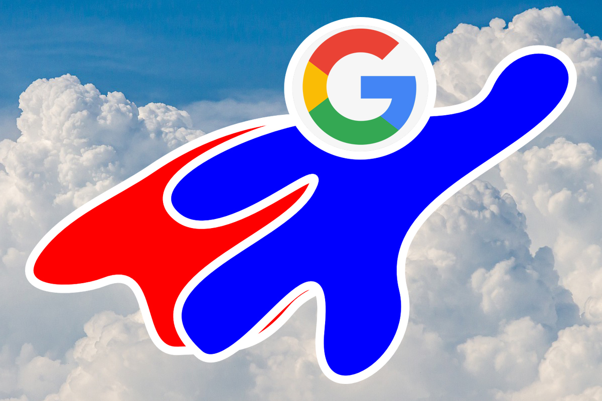

 Компания Google – мировой лидер в области технологий. Главная задача корпорации – постоянное развитие способов обработки информации. Благодаря своему инновационному подходу к веб-поиску и рекламе, Google вошла в список самых посещаемых интернет-сайтов, а ее бренд стал одним из самых узнаваемых в мире. Google является зарегистрированной торговой маркой Google Inc.
История
Google появился в январе 1996 года как научно-исследовательский проект Ларри Пейджа и Сергея Брина, которые тогда учились в Стэнфордском университете в Калифорнии[23]. Хотя обычные поисковые системы тогда сортировали поисковую выдачу по тому, сколько раз искомые термины упоминались на странице, Пейдж и Брин размышляли над лучшей системой, которая анализировала бы отношения между сайтами[24]. Они назвали эту новую технологию PageRank, актуальность сайта в ней определяется количеством и важностью страниц, которые ссылаются на сайт[25][26]. Небольшая поисковая система RankDex от IDD Information Services, разработанная Робином Ли, с 1996 года уже изучала аналогичную стратегию для ранжирования страниц.
Рост
В марте 1999 года компания переехала в Пало-Альто (штат Калифорния) — город, в котором размещены штаб-квартиры нескольких других известных технологических стартапов Кремниевой долины. В следующем году, вопреки изначальной позиции Пейджа и Брина против финансируемой рекламой поисковой системы, Google начала продавать рекламу, связанную с поиском ключевых слов. В целях соответствия минималистичному дизайну объявления были исключительно текстовыми. В 2001 году Google получила патент, описывающий механизм PageRank. Патент был официально выдан Стэнфордскому университету и указывает Лоуренса Пейджа как изобретателя. В 2003 году компания арендовала свой нынешний офисный комплекс у Silicon Graphics в Маунтин-Вью (штат Калифорния). Комплекс с тех пор стал известен как Googleplex. Три года спустя Google купила собственность у SGI за 319 млн долл.
Акционеры
- DC Marvel Group
- BlackRock
- FMR, LLC
- State Street Corporation
- T. Rowe Price